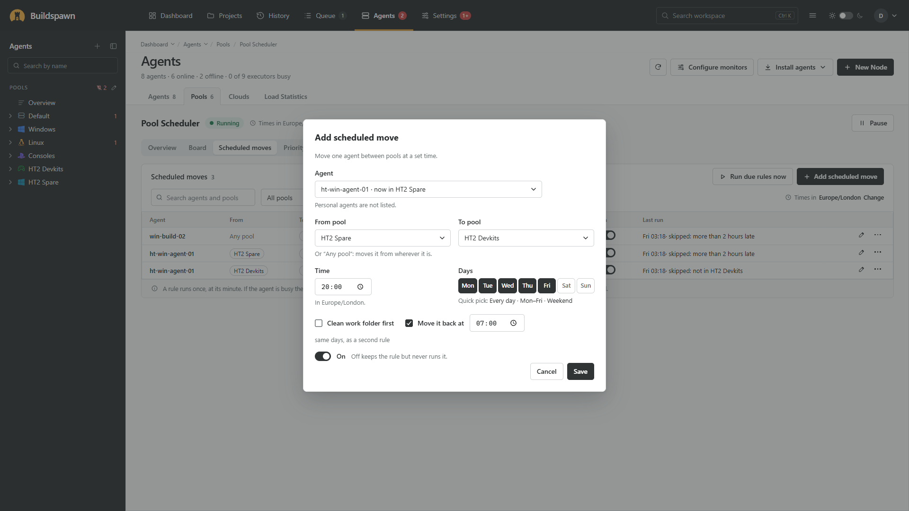
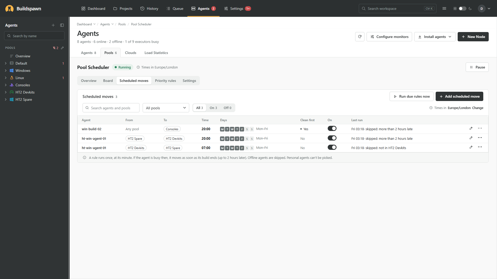
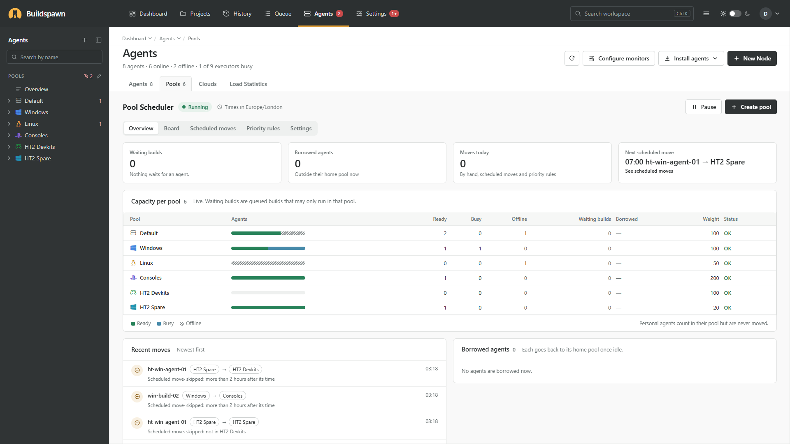

Move agents to another pool every evening
Lend a machine to another pool every weekday evening, for example to run night devkit builds, and get it back before people arrive.
Before you start
- You are an administrator.
- Both pools exist, for example
HT2 Spare(where the agent lives by day) andHT2 Devkits(where it works at night). See Create a pool for console devkits. - Check the scheduler's time zone: it is shown at the top of the Pool Scheduler, for example Times in Europe/London. Change it under Settings if needed.
Steps
- Open Agents, click the Pools tab, then Scheduled moves.
- Click Add scheduled move.
- In Agent, pick the machine, for example
ht-win-agent-01. The list shows which pool each agent is in now. - In From pool, pick
HT2 Spare. Or pick Any pool to move it from wherever it is. - In To pool, pick
HT2 Devkits. - Set Time to
20:00. - Under Days, click the quick pick Mon–Fri.
- Tick Move it back at and set
07:00. This adds the return move as a second rule, on the same days. - Tick Clean work folder first only if the night builds need a clean disk.
- Click Save.

Check it worked
- The Scheduled moves list now has two rows for the agent:
HT2 Spare→HT2 Devkitsat 20:00, and back at 07:00, both Mon–Fri and switched On. Last run says Never until the first evening. - On the Overview tab, the Next scheduled move card shows the next time and agent.
- The next morning, check Recent moves on the Overview tab: it lists both moves with the time and the rule that made them.


To test the rules without waiting for the evening, click Run due rules now. It runs every move whose time has already passed today.
Troubleshooting
| Problem | What to do |
|---|---|
| The agent didn't move at 20:00. | If it was busy, it moves as soon as its build ends, up to 2 hours late; after that the move is skipped and logged. Offline agents are skipped. Check Recent moves for the note. |
| Nothing moved at all. | The scheduler may be Paused (see the strip at the top), or the rule's On switch is off. |
| The agent moved an hour early or late. | The scheduler's time zone differs from yours. Change it under Settings. |
| The agent is not in the Agent list. | Personal agents are never moved, so they are not listed. |
Next steps
- The Pool Scheduler: the board, pause, settings and the activity log.
- Give release builds priority on agents.